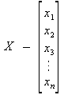
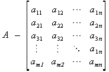

Muchas aplicaciones requieren el procesado de múltiples datos que tienen características comunes. En tales situaciones es a menudo conveniente colocar los datos en un arreglo ó “array”, donde todos comparten el mismo nombre. Los datos individuales pueden ser caracteres, enteros, números en coma flotante, etc. Pero todos tienen que ser del mismo tipo y con el mismo tipo de almacenamiento.
Cada elemento del arreglo es referido especificando el nombre del arreglo seguido por uno o más índices, con cada índice encerrado entre corchetes. Cada índice debe ser expresado como un entero no negativo: una constante entera, una variable entera o una expresión entera más compleja.
En un arreglo x de n elementos los elementos del arreglo son:
x[0], x[1],...,x[n-1].
El número de índices determina la dimensionalidad del arreglo.
En matemáticas se usa la siguiente notación para representar vectores y matrices:
Vector. Matriz


Donde cada componente se denota como xi en el caso de vectores unidimensionales y aij en el caso de matrices. A los símbolos i y j se los conoce como índices y dicen la posición de la componente dentro del vector-matriz.
La dimensión de un vector es el número de sus componentes (n).
El orden de una matriz es el número de sus filas y columnas (m x n).
Al definirse, cada arreglo debe acompañarse de una especificación de tamaño (número de elementos). En términos generales, un arreglo unidimensional puede expresarse como:
tipo_vector nombre_vector[tamaño_vector]; tipo_dato nombre_arreglo[expresión_entera_positiva];
donde tamaño_vector (que debe ser una expresión entera positiva) indica el número de elementos del arreglo. Ojo que para hacer referencia a estos elementos se debe tomar en cuenta que el primer elemento es el número cero. Veamos unos ejemplos en los que se realiza asignaciones a elementos de un vector:
int i; int vector[3]; // Define un arreglo unidimensional de 3 elementos i=2; vector[i]=1; // Esto se puede hacer vector[0]=2; // Esto también vector[3]=5; // Obviamente ésto NO ya que no existe. Sólo 0, 1 y 2 (3 elementos)
y unos ejemplos de lectura:
i=vector[0]; i=vector[i]; vector[1]=vector[0]+vector[2]; vector[i-1]=1; vector[vector[i]]=0;
Las definiciones de arreglos pueden incluir, si se desea, la asignación de valores iniciales. Los valores iniciales deben aparecer en el orden en que serán asignados a los elementos individuales del arreglo, encerrados entre llaves y separados por comas. La forma general es:
tipo_dato nombre_arreglo[expresión] = {valor1,valor2,...,valorn};
La presencia de la expresión, que indica el número de elementos del arreglo, es opcional cuando los valores iniciales están presentes.
OJO, MUY IMPORTANTE: Todos los elementos del arreglo que no tienen asignados valores iniciales explícitos serán puestos automáticamente a cero. Por lo tanto si se desea asignar cero a todos los elementos de un arreglo, se podría tan solo declarar cero como el primer valor y el resto se hará de forma automática. P. ej.:
int a[40]={0};
asignará cero a los elementos entre el cero y el treinta y nueve del arreglo. También aplica para arreglos multidimensionales.
Ojo, esto no quiere decir que si se inicializa el primer elemento con uno el resto también lo será. NO. El primero será uno y el resto será cero.
En C no se permiten operaciones que impliquen arreglos completos. Así, si a y b son dos arreglos similares (mismo tipo de datos, misma dimensionalidad y mismo tamaño), las operaciones de asignación, comparación, etc., deben realizarse elemento por elemento. Para este fin también existe un grupo de funciones poderosas definidas dentro del archivo de cabecera “string.h” de las cuales hablaremos más adelante.
Los arreglos multidimensionales son definidos prácticamente de la misma manera que los arreglos unidimensionales, excepto que se requiere un par de corchetes para cada índice. En general:
tipo_matriz nombre_matriz[n_filas][n_columnas];
ó incluso de más dimensiones:
tipo_dato nombre_arreglo [indice_1][indice_2]...[indice_n];
Veamos unos ejemplos en los que se realiza asignaciones a elementos de una matriz:
int i=1, j, k; int Matriz[2][3]; k=31000; j=2; Matriz[1][0]=2; // Coorecto. Matriz[0][j]=k; // Bien. Matriz[i][j]=50; // Bien Matriz[j][k]=100; // No señor, no está permitido.
Y unos ejemplos de lectura serían:
k=Matriz[i][j]; i=Matriz[1][2]; Matriz[1][i]=5*Matriz[0][i]; j=Matriz[5][j-1]; k=Matriz[vector[i]][0];
Los arreglos multidimensionales también puden ser inicializados al momento de su declaración. Un ejemplo específico con inicialización para un tipo bidimensional sería algo como:
tipo_matriz nombre_matriz[][2]={
{0 , 1},
{1 , -3}
};
aunque las llaves internas no son necesarias y sólo se usan para facilitar la lectura del arreglo por parte del programador. Lo que si es absolutamente necesario es que en la definición del arreglo se incluya al menos uno de los índices (ésto si es de dos dimensiones. Lo importante es que sólo puede faltar un solo índice como máximo y éste debe ser el primero). Ésto es porque el compilador necesita saber como serán organizados los datos. Si no se coloca uno de los índices entonces sólo se sabría que es un arreglo que contiene 4 elementos lo cual podría ser un arreglo de 4 filas y 1 columna, 2 filas y 2 columnas ó 1 fila y 4 columnas.
Los arreglos multidimensionales se procesan de la misma manera que los arreglos unidimensionales, sobre la base de elemento a elemento. Sin embargo, se requiere algún cuidado cuando se pasan arreglos multidimensionales a una función. En particular, las declaraciones de argumentos formales dentro de la definición de función deben incluir especificaciones explícitas de tamaño en todos los índices excepto en el primero (análogo a lo dicho en el párrafo anterior). El paso de arreglos a funciones será nuestro próximo punto.
A diferencia de los tipos básicos, el contenido de los vectores y matrices siempre es pasado por referencia. (Ver “llamada por referencia” en funciones).
El nombre de un arreglo se puede usar como argumento de una función, permitiendo así que el arreglo completo sea pasado a la función. Para pasar un arreglo a una función, el nombre del arreglo debe aparecer sólo, sin corchetes o índices, como un argumento actual dentro de la llamada a la función. El correspondiente argumento formal se escribe de la misma manera, pero debe ser declarado como un arreglo dentro de la declaración de argumentos formales. Cuando se declara un arreglo unidimensional como un argumento formal, el arreglo se escribe con un par de corchetes vacíos.
Hemos visto que los argumentos son pasados a la función por valor cuando los argumentos son variables ordinarias. Sin embargo, cuando se pasa un arreglo a una función, los valores de los elementos del arreglo no son pasados a la función. En vez de ésto, el nombre del arreglo se interpreta como la dirección del primer elemento del arreglo. Esta dirección se asigna al correspondiente argumento formal cuando se llama a la función. El argumento formal se convierte por tanto en un puntero al primer elemento del arreglo (más sobre esto cuando hablemos de punteros). Como ya sabemos, los argumentos pasados de esta forma se dicen que son pasados por referencia en vez de por valor. Por tanto, si un elemento del arreglo es alterado dentro de la función, esta alteración será reconocida en todo el ámbito de definición del arreglo. Veamos algunos ejemplos:
void funcionMat(int M[2][2]); // Declara una función que recibira una matriz de 2x2.
void main()
{
int Matriz[2][2]; // Declara una matriz de 2x2 elementos
Matriz[0][1]=1; // Inicializa el elemento (1,2) a 1
funcionMat(Matriz); // llama a la función y le envia la dirección de Matriz.
// OJO en como se le envia (sin corchetes). Esto se
// traduce en “la dirección del primer elemento de Matriz”.
printf(“%d”, Matriz[0][1]); // Imprime el elemento que ya no contiene 1 porque...
}
void funcionMat(int M[2][2])
{
M[0][1]*=-2; // ésto altera el valor del arreglo original. Recordar que es por referencia.
}
Existen tres formas de pasarle un arreglo a una función. Éstas son:
void funcion(int[10]);
que es la clásica que hace uso de un arreglo delimitado. Esta también:
void funcion(int []);
que es la versión con un array no delimitado. Y por último, como el paso de los arreglos a una función se hace por referencia, también podemos declarar una función que reciba un arreglo a través de los punteros. Por ejemplo para un arreglo unidimensional de enteros, basta con definir que la función recibirá un puntero a entero. Veremos un ejemplo aunque ésto será profundizado más adelante. El prototipo de una función que recibirá un arreglo unidimensional de enteros podría definirse:
void funcion(int *x);
Todo lo anterior hace lo mismo. Definir que la función recibirá una dirección de memoria que apunta a un entero. De hecho, como C no comprueba los límites de un arreglo, en lo que a la función se refiere, realmente no importa la longitud del arreglo. El compilador al leer:
void funcion(int[32]);
hará exactamente lo mismo ya que el compilador instruye a funcion para recibir un puntero; realmente no crea un arreglo de 32 elementos.
En realidad en Lenguaje C no existe una variable de tipo “string” como tal. En C, lo que es conocido en otros lenguajes como strings son tan solo un tipo especial de arreglos. Específicamente son arreglos de caracteres.
Una cadena de caracteres se representa por un arreglo unidimensional de caracteres. Cada carácter de la cadena se almacena en un elemento del arreglo. De hecho ésta es la forma más usada de arreglos unidimensionales.
OJO. MUY IMPORTANTE: En la las operaciones con arreglos de caracteres, siempre se guarda automáticamente como último elemento el carácter nulo: '\0'. Esto indicará siempre el fin de la cadena. Así que para declarar un arreglo de caracteres es necesario que sean un carácter más que la cadena más larga que pueda contener. Ejemplo:
char array1[10]="987654321";
declara un arreglo de caracteres de 10 elementos y es inicializado. Cuando se inicializa una cadena podría dejarse los corchetes vacíos y así el compilador le asignará el índice requerido automáticamente pero si NO es así, se debe tener en cuenta que el último carácter de la cadena también ocupará un puesto. Este es el carácter nulo \0. Así que nuestra declaración contiene 10 elementos aunque sólo asignamos 9 (y no se le puede asignar más ya que no dejaríamos lugar al ya bastante mencionado \0). O sea que la sentencia anterior es lo mismo que:
char array1[]={'9','8','7','6','5','4','3','2','1','\0'};
usando la forma comentada en la “Definición de Arreglos”.
Algunos problemas requieren que los caracteres de la cadena sean procesados individualmente. No obstante, hay muchos otros problemas en los que se requiere que las cadenas se procesen como entidades completas. Tales problemas pueden simplificarse considerablemente usando funciones especiales orientadas a cadenas. Entre las funciones incluidas en stdio.h tenemos:
gets(): Su forma general es:
gets(cadena_de_caracteres)
y lo que hace es tomar de teclado un texto (hasta que se pulse enter) y guardarlo en cadena_de_caracteres.
ADVERTENCIA DE SEGURIDAD: La función gets() es extremadamente insegura y está obsoleta en C moderno (fue eliminada del estándar C11) porque no comprueba los límites del arreglo, lo que puede causar desbordamientos de búfer. Se recomienda usar fgets() en su lugar.
puts(): Su forma general es:
puts(cadena_de_caracteres)
y lo que hace escribir en pantalla el contenido de cadena_de_caracteres terminando con un salto de línea. También se puede usar la función printf() especificando que el tipo a imprimir es %s. P. ej.:
printf("La cadena contiene: %s\n",nombre_cadena);
Las funciones especificadas a continuación para el tratamiento de cadenas de caracteres se encuentran en el fichero de cabecera string.h:
strcmp(): Su forma general es:
strcmp(cadena1,cadena2)
y lo que hace es comparar alfabéticamente dos cadenas. Devuelve:
cadena1 precede alfabéticamente a cadena2.cadena2 precede alfabéticamente a cadena1.Vea que esta función devuelve FALSO (0) cuando las cadenas son iguales por lo que si está probando la igualdad, asegúrese de usar el operador lógico ! para invertir la condición. Véase el ejemplo al final de este punto.
strcpy(): Su forma general es:
strcpy(cadena1, cadena2)
y lo que hace es copiar el valor de cadena2 en cadena1 y devuelve cadena1.
strlen(): Su forma general es:
strlen(cadena)
y retorna el número de caracteres de la cadena.
strcat(): Su forma general es:
strcat(cadena1, cadena2)
y lo que hace es concatenar la cadena apuntada por cadena2 a la cadena apuntada por cadena1 la cual contendrá la versión final de la cadena. También devuelve cadena1. Véase que hace algo como: cadena1 + cadena2.
A continuación veamos un ejemplo:
#include#include int main() { char c1[80], c2[80]; // ADVERTENCIA: gets() es insegura. Usar fgets() en código moderno. gets(c1); gets(c2); printf("longitudes: %i %i\n", strlen(c1), strlen(c2)); if ( !strcmp(c1, c2) ) printf("Son iguales\n"); strcat(c1, c2); printf("%s\n", c1); return 0; }
Si se ejecuta este programa e introducimos las cadenas TEST y TEST, por ejemplo, la salida será:
longitudes: 5 5 // Espero que sepan porqué. Son iguales TESTTEST